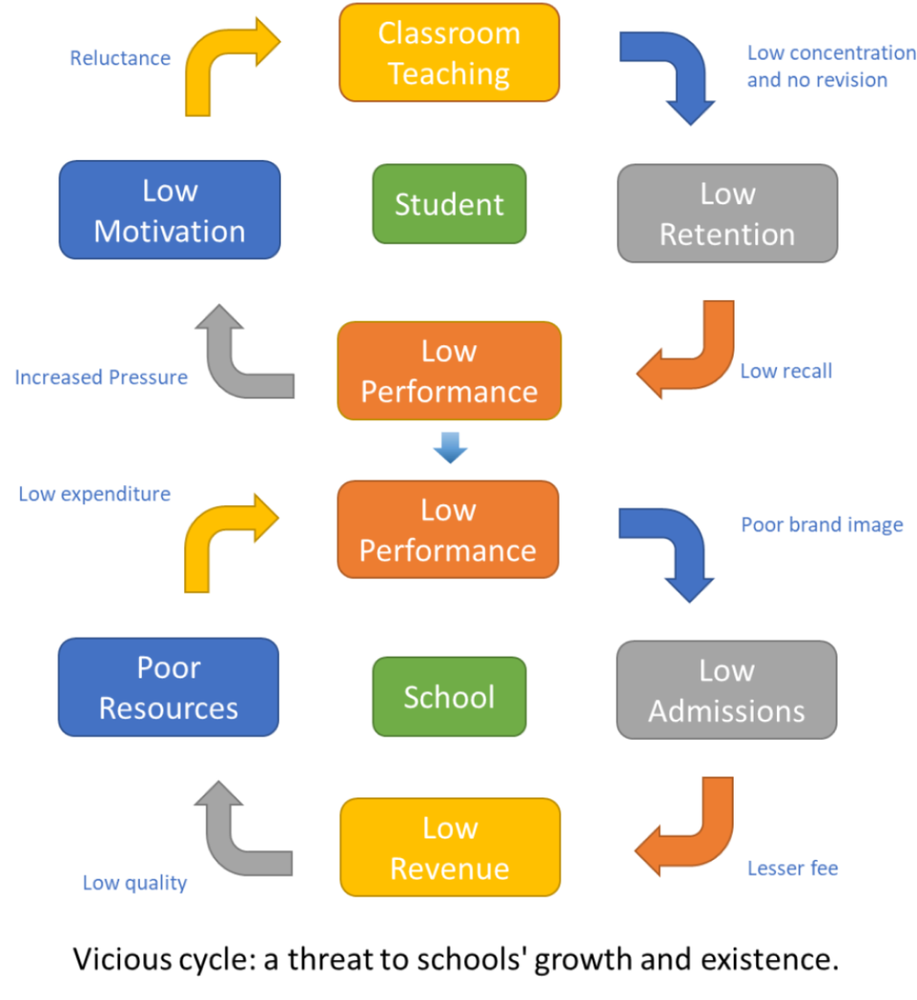

Low concentration of students in the classroom along with no systematic revision at home creates huge challenge in the retention, learning and performance. Low performance starts destroying intrinsic motivation which induces disinterest and reluctance to learn and distress memory, thus further affecting their performance. The student then gets into vicious cycle of low performance. This vicious cycle of low performance of students’ results in poor admissions in the school that yields poor revenue, which affects infrastructure and teacher’s development and further leads to poor results … and the cycle continues. It affects the performances of both – The Student and School.
What is the Solution?
Solution lies in breaking the vicious cycle.
EduStine Technologies’ (www.edustine.com) MiSkool promises to break the above vicious cycle and empower the school to produce better performance, bigger brand image and greater parental satisfaction. MiSkool is the first revision-recall tool that is organically in-synch with the school. It adopts innovative and research driven contemporary pedagogical approaches of teaching-learning-assessment to transform the school into a progressive 21st century school. To achieve all the stated objectives we use state-of-the-art Analytics and AI driven technology EduStine as the back bone architecture of MiSkool.